Operating Documentation
Direction 5440001-3, Rev# 6
Signa HDxt Service Methods
Module Version 1.0, Version Date 5/15/07
Operating Documentation |
| Required Persons | Preliminary Reqs | Procedure | Finalization |
|---|---|---|---|
| 1 | Not Applicable | Not Applicable | Not Applicable |
| Item | Qty | Effectivity | Part# | Manufacturer | |
|---|---|---|---|---|---|
| Solenoid Valve Replacement Kit | 1 | - | 2317288-4 | - | |
| Adjustable Crescent Wrench | 1 | - | - | - | |
Ensure that you have the Solenoid Valve Replacement Kit 2317288-4. See Illustration 1
Illustration 1: Contents of the Solenoid Valve Replacement Kit
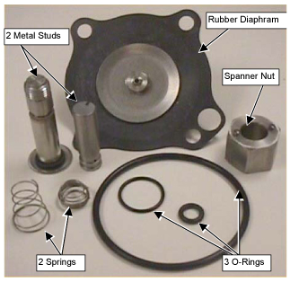
Remove the four Phillips head screws to remove the bracket that houses the solenoid valve. See Illustration 2
Illustration 2: Solenoid Valve
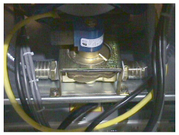
Using the crescent wrench, remove the top nut. See Illustration 3
Illustration 3: Removing Top Nut From Solenoid Valve
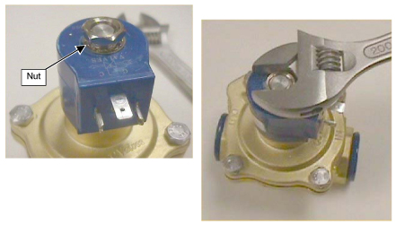
Remove the blue Solenoid. See Illustration 4
Illustration 4: Blue Solenoid Removed From Stud
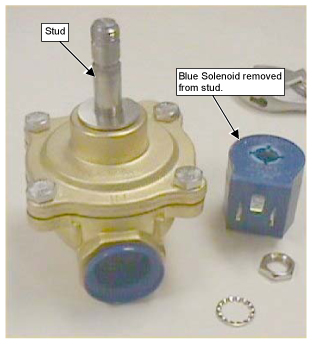
Remove lock washer from base of stud. See Illustration 5
Illustration 5: Removing Lock Washer
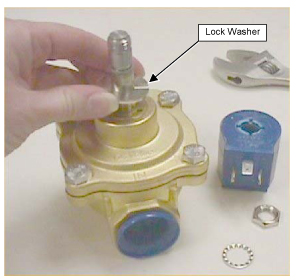
Remove the spanner nut on the solenoid. See Illustration 6
Illustration 6: Removal of Spanner Nut
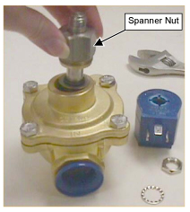
Remove the stud. See Illustration 7
Illustration 7: Removing Stud
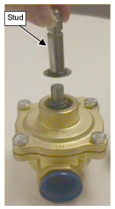
Remove four (4) nuts. See Illustration 8
Illustration 8: Location of Nuts to Remove
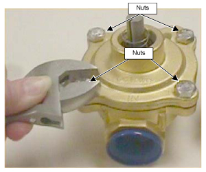
Remove the top plate of the solenoid valve. See Illustration 9
Illustration 9: Removing Top Plate of Solenoid Valve
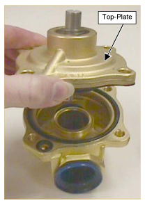
Remove the rubber diaphragm assembly from the top plate and discard. See Illustration 10
Illustration 10: Removing Rubber Diaphragm
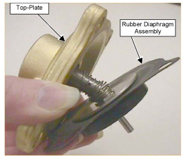
In the top plate is a silver cylinder. Push the silver cylinder out and replace the O-ring. See Illustration 11
Illustration 11: Replacing O-Ring on Silver Cylinder
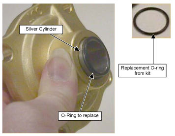
Take the new rubber diaphragm from the Solenoid Valve Kit and place the small spring on the round base the rubber diaphragm. See Illustration 12
Illustration 12: Placing Small Spring on Round Base of Rubber Diaphragm
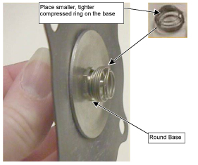
Take the small metal stud from the kit and place on the spring of the rubber diaphragm till spring snaps on to the bottom ridge of the stud. See Illustration 13
Illustration 13: Attaching Small Stud to Rubber Diaphragm
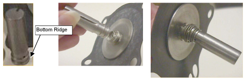
Take the larger conical shaped spring and place over the top of stud till it snaps on the first ridge of the stud. See Illustration 14
Illustration 14: Placing Conical Shaped Spring on Stud
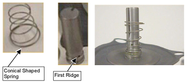
In the lower plate of the solenoid valve, remove the two (2) O-rings and replace with rings from kit. See Illustration 15
Illustration 15: Replacing O-Rings in Lower Plate
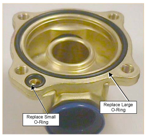
Replace the rubber diaphragm assembly in the top plate. See Illustration 16
Illustration 16: New Rubber Diaphragm on Top Plate
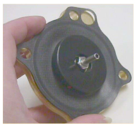
Place the top plate on the lower plate of the solenoid valve. Make sure the rubber diaphragm lines up with the correct holes.
Replace the four nuts and screws. See Illustration 17
Illustration 17: Securing Top Plate of Solenoid Valve Assembly
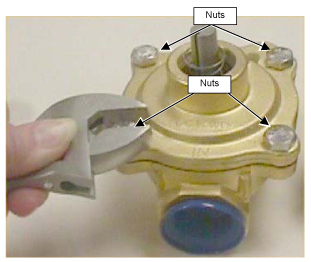
Take the larger metal stud with threading from the kit and slide over the stud from the rubber diaphragm. See Illustration 18
Illustration 18: Replacing large Metal Stud
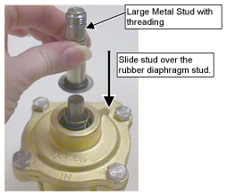
Take the spanner nut form the kit and slide the nut in place to secure stud. See Illustration 19
Illustration 19: Replacing Spanner Nut
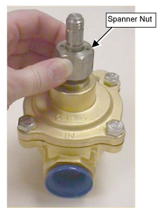
Replace the locking washer on top of the spanner nut. See Illustration 20
Illustration 20: Replacing Locking Washer
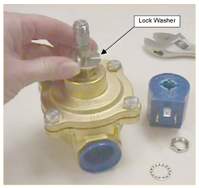
Replace the blue solenoid. See Illustration 21
Illustration 21: Replacing and Securing Blue Solenoid
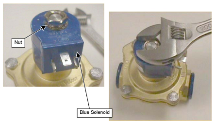
Replace the locking washer and nut on top of the blue solenoid and secure. See Illustration 21
Replace the solenoid valve assembly
No finalization steps.